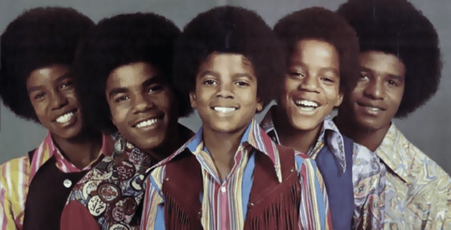
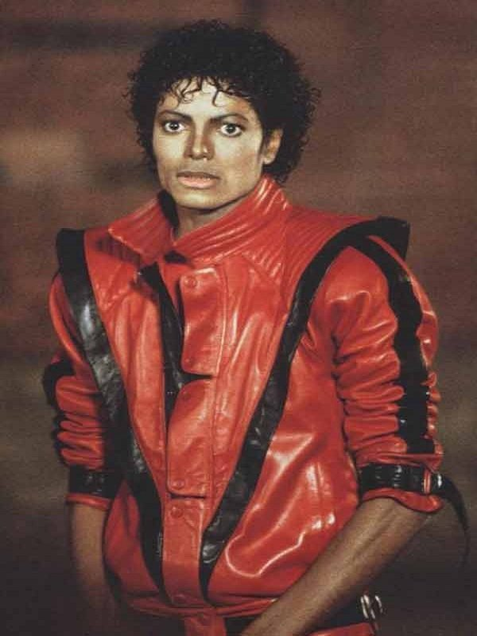
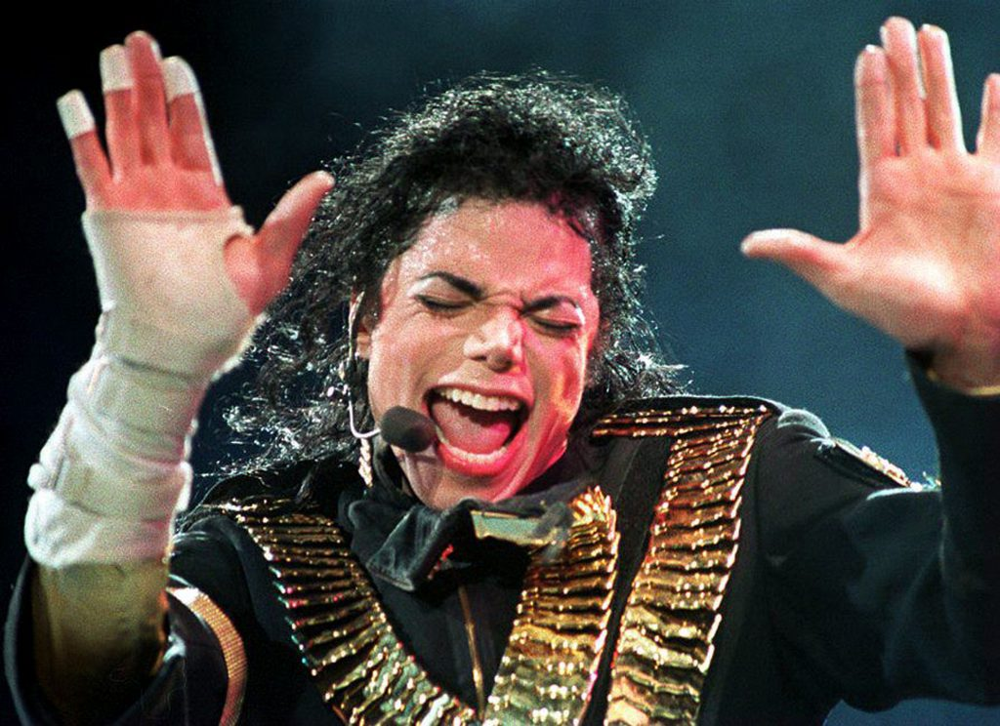
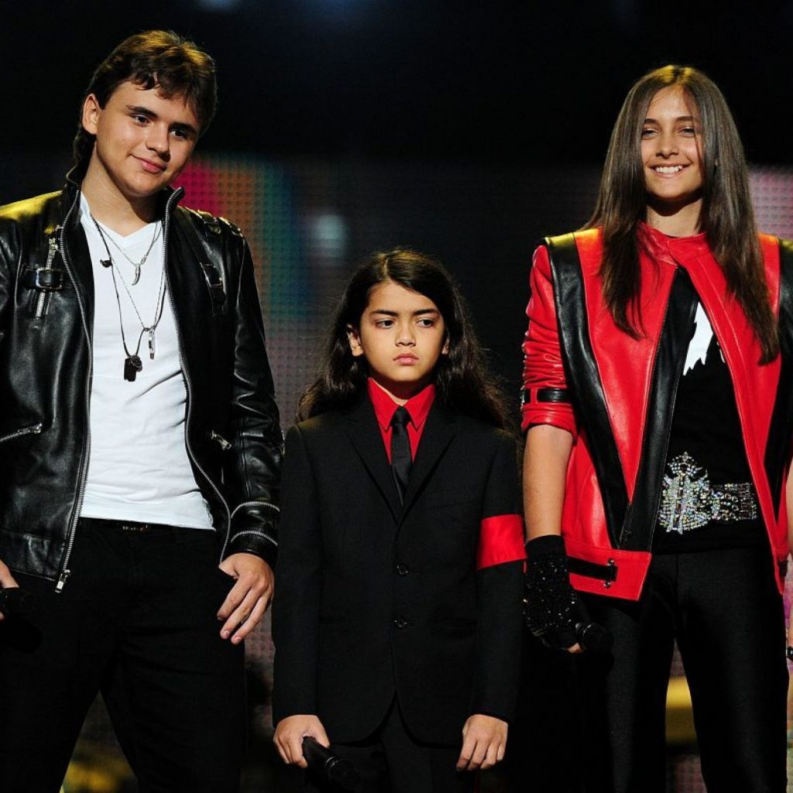
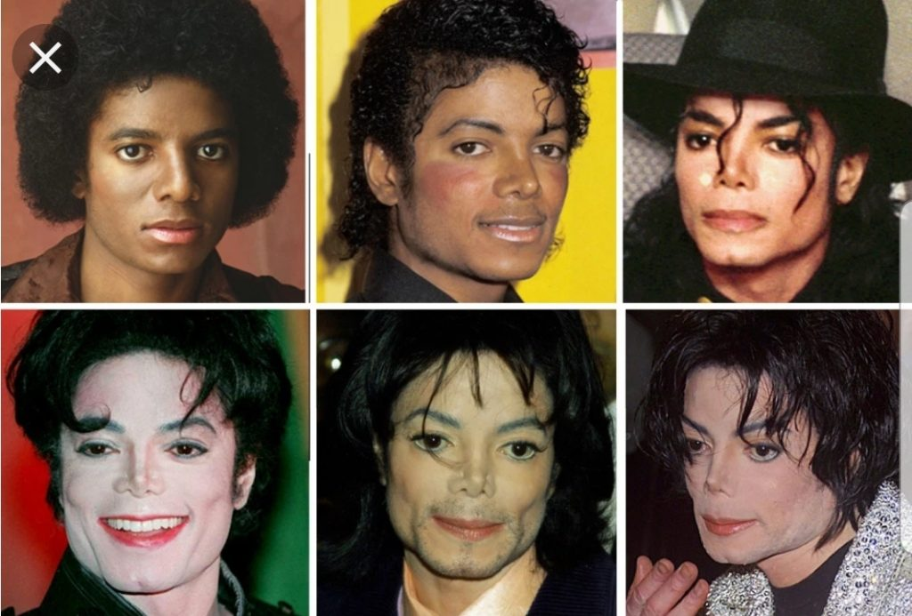
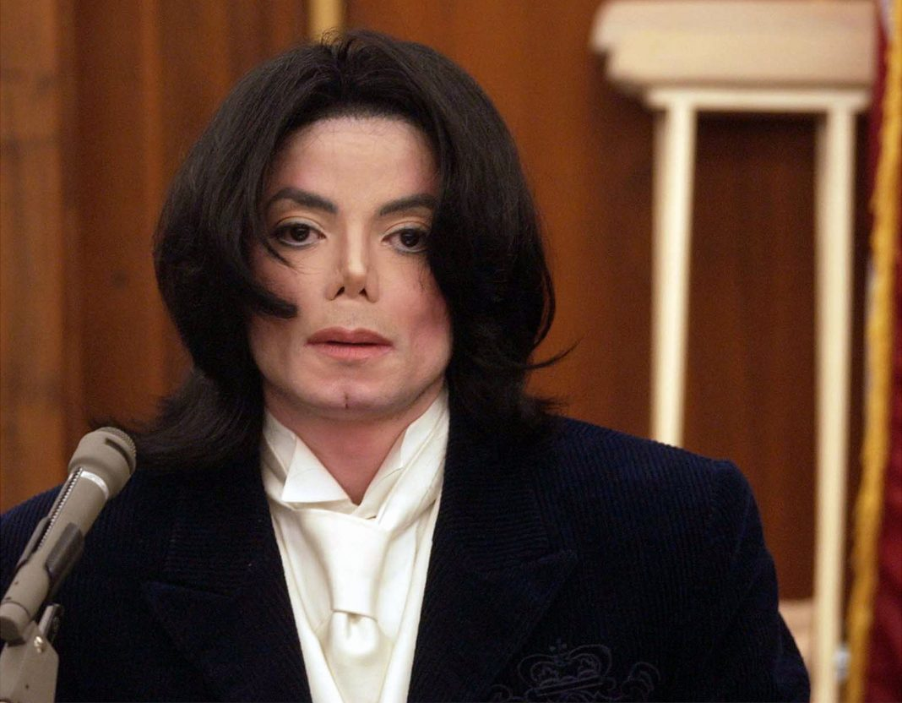

Michael Jackson számai:


Vissza
Főoldal
Michael Jackson élete, karrierje
Bevezetés:
Michael Jackson. Egy rendkívüli tehetség, aki gyereksztárként kezdte és végül globális jelenséggé nőtte ki magát. Albumok százmillióit adta el, és áthidalta a fekete-fehér kulturális szakadékot. Aztán jött egy nagy váltás, életének utolsó évtizedében inkább botrányaitól és plasztikai műtéteitől volt hangos a sajtó. A poptörténelem egyik legnagyobb szórakoztatójának élete, halála és öröksége rendkívül tanulságos.
Ő is gyereksztárként kezdte
Michael 1958. augusztus 29-én született az egyesült államokbeli Indianaban a Jackson család hetedik gyermekeként. Édesanyja, Katherine Jackson egy amerikai áruházláncnál dolgozott, esténként pedig népdalokat tanított gyermekeinek. Férje, Joseph darukezelőként kereste a kenyérre valót és hobbiból gitározott, tehát a kis Jackson hamar megismerkedett a zene szeretetével. Gyerekként számtalan fellépése volt a testvéreivel, már ovisként is egyfajta vezető szerepet töltött be a brigádban.
“Olyan energikus volt. Már ötéves korában láttuk benne azt a bizonyos pluszt. Olyan volt, mint egy vezető. Tehát azt mondtuk: Hé, Michael, légy te a főszereplő! A közönség pedig imádta.” – nyilatkozta egyik testvére a Rolling Stone magazinnak.
Korábban már írtunk egy cikket arról, hogy milyen nehézségekkel kell szembenézniük a gyerekként híressé válóknak. Jackson is korán belekóstolt a sikerbe: 11 évesen elköltözött a szülői házból Diana Ross hollywoodi kúriájába, aki a szárnya alá vette a fiatal tehetséget. Az énekesnő a Jackson Five megalapításában is részt vett – az együttesben Marlon, Jackie, Tito, Jermaine és Michael kapott helyet – és itt indult be igazán az énekes karrierje.
1968 augusztusában a csapat áttörő teljesítményt nyújtott a Beverly Hills-i The Daisy nevű klubban. Első albumuk, a “Diana Ross Presents the Jackson 5” 1969 decemberében jelent meg, és ezzel a “I Want You Back” lett a lemez első slágere, innen pedig nem volt megállás. 14 éves korára Michael Jackson már popjelenség volt.

A bántalmazott Michael Jackson
A korai sztárlétnek ebben az esetben is ára volt: a gyermekkor. “Soha nem volt alkalmam olyan szórakoztató dolgokat csinálni, amiket a gyerekek csinálnak. Nem volt karácsony, nem ünnepnap, csak a fellépések.” – mondta egyszer Jackson. Ha ez nem lett volna elég, a popsztárnak édesapja lelki és fizikai bántalmazása is rányomta bélyegét az életére.
Joseph Jackson öklével és harsogó dühével uralta az egész családját. Martin Bashir brit újságíró 2003-as dokumentumfilmjében Jackson elmondta, hogy édesapja a próbák során gyakran övvel ütötte őket, pofont kaptak, vagy falhoz lökte őket, ha tévedtek vagy hibát követtek el. Az énekes saját bevallása szerint rettegett az apjától. Az interjúban hozzátette, hogy apja a “mopsz orra” és serülőkori pattanásai miatt is folyton gúnyolta és megalázta.
A tündöklés
Jackson nem csoda, hogy tele volt szorongással, de a színpadon nem ismert félelmet. A körülötte lévők úgy írták le, mintha két különböző ember élt volna benne: civilben egy átlagos, félénk fiú, a színpadon pedig egy érett, magabiztos felnőtt. 1972-ben jelent meg első szólóalbuma, a „Got to Be There”, amely a „Rockin’ Robin” c. slágert is tartalmazta. Első szóló kislemeze ugyanebben az évben jött ki – a „Ben” című film betétdala. Michael Jackson ekkor még mindössze 14 (!) éves volt.
Ebben az évtizedben vált a világ legnépszerűbb popénekesévé a nagy sikerű lemezek sorozatának – a “Beat It”, a “Billie Jean”, a “Thriller” – és a káprázatos zenei videóknak köszönhetően.
Nemzedékének talán legjobb táncosa, létrehozta saját jellegzetességeit: az egyetlen fényes kesztyűt, a Moonwalkot, a piros kabátot és a Neverland Ranch-t.
Az „Off the Wall” (1979) volt Jackson debütáló albuma az Epic kiadónál. 5 millió példányt adott el az Egyesült Államokban, 2 milliót pedig külföldön. A „Thrillert”, 1982 végén jelent meg, és a történelem legkeresettebb stúdióalbuma lett és ezzel Jackson örökké beírta magát a poptörténetbe. Óriási volt a hatása a zeneiparra és az akkor kialakuló MTV zenei videóira.
Tommy Mottola, a Sony Music volt elnöke 16 évig adta ki Jackson zenéit. Egy interjúban a következőképp méltatta a popikont: „A poptörténelemben a popikonok triumvirátusa létezik: Sinatra, Elvis és Michael, amelyek meghatározzák az egész kultúrát. Jackson zenéje hidat épített rasszok és nemzedékek közé és abszolút meghatározta a videoklipek korát. Semmi, ami előtte vagy utána következett, soha nem lesz akkora, mint ami Ő volt.”
Michael Jackson – a pop királya
A Times kritikusa, Robert Hilburn a Pasadena Civic Auditoriumban élőben figyelte Michael Jackson egyik előadását. A koncertet a nem hivatalos koronázásnak, az énekest pedig a pop királyának nyilvánította. Pár hónap alatt megváltoztatta a popzene hallásának és látásának módját, új színt adva ezzel az eddig Elvis Presley és a Beatles uralta területnek. ”
A „Thriller” nemcsak az értékesítési rekordokat döntötte meg bestseller albumként, hanem Jackson-t is az első előadóvá tette, aki egyszerre vezetett a négy toplistát. Tizenhárom Grammy-díjat kapott. Jay Cocks a Time magazinban azt írta, hogy Jackson a valaha élt legnépszerűbb fekete énekes.
A hatalmas siker után
Jackson letarolta a 70-es és 80-as évek slágerlistáit, majd megérkezett hozzá is a szerelem: 1994-ben feleségül vette Lisa Marie Presley-t – Elvis lányát – a házasság azonban rövid életű volt és két év múlva elváltak az útjaik. A popsztár ebben az időszakban már elképesztő fényűzésben élt és egyre csak költötte a pénzt: meg akarta vásárolni a Beatles-katalógusát 500 millió dollár értékben, és felépült a 2700 hektáros Neverland Ranch is a Santa Ynez-völgyben, ahol egzotikus háziállatok garmadáját tartotta és saját vidámparkját is felépítette.
“Jackson saját hírességének foglya lett. Annyira megszokta a testőröket és az asszisztenseket, hogy egyszer beismerte: megremeg, ha ki kell nyitnia a saját bejárati ajtaját”
1997-ben vette feleségül Debbie Rowe nővért, akivel bőrgyógyásza asszisztenseként dolgozott. Két gyermekük született – a fiút Michael Joseph Jr (Prince)-nek nevezték el, a lányt pedig Paris-Michael Katherinenek. Nem volt szerencsés a szerelemben, ugyanis ez a házasság is válással végződött 1999-ben. Harmadik gyermeke 2002-ben született, édesanyjának kiléte ismeretlen.

Plasztikai műtétek garmadája
Mindenki ismeri a plasztikai sebészettel fennálló kóros kapcsolatát, amely a szemünk előtt átlagos emberből felismerhetetlen lénnyé változtatta. Becslések szerint tucatnyi eljáráson esett át, amelyek közül néhány elég silány minőségű volt. Egyre világosabb bőrrel jelent meg a nyilvánosság előtt, azt állította, hogy vitiligóban szenved – amelynek következtében a bőr foltokban veszíti el pigmentjét – ezt egyébként a boncolása is megerősítette, de a magyarázatot mindig szkeptikusan fogadta a fekete közösség.
Többek szerint Jackson-t részben az amerikaiakra jellemző hiedelem motiválta: hogy a világos bőr, a vékony ajkak, a kis orr és az egyenes haj képviseli a tökéletes szépséget. Nyilvánosan beismerte két orrműtétjét, de a fényképeit tanulmányozó plasztikai sebészek szerint sokkal többször esett át ilyen műtéten, és valószínűleg a sok műtét már elpusztította a porcot az orrában.

A molesztálási botrány
1993-ban azzal vádolták, hogy egy 13 éves fiút molesztált, aki gyakori éjszakai vendég volt otthonában. Amikor kirobbant a botrány, épp ázsiai turnén vett részt, de egyből lemondta az összes fellépést kimerültségre hivatkozva. Súlyos fájájdalomcsillapító-függősége már közismert volt. A botrány idején Lisa-Marie Presley volt még a partnere, aki végig támogatta az énekest ebben a nehéz időszakban. Jackson ügyvédje azzal a fiú apját, hogy csak pénzt próbál kicsikarni az énekesből. A bűnügyi nyomozást lezárták, miután a fiú nem volt hajlandó vallomást tenni.
“Nem vagyok bűnös a vádpontokban. De ha valamiben bűnös vagyok, az az, hogy mindent megadok, hogy segítsek a gyerekeknek. Örömömre szolgál, ha ártatlan és mosolygós arcokat láthatok magam körül. Csak vidáman élvezik a gyerekkort, ami annyira hiányzott az én életemből. – mondta az akkor 35 éves Jackson a tárgyaláson.
A világ nem hitt neki: A perből hatalmas botrány kerekedett, szerződést bontott vele több cég is, többek között a Pepsi és néhány készülő film terve is elkaszálódott emiatt. A második eset 2003 novemberében bontakozott ki, amikor a Santa Barbara-i hatóságok egy 13 éves rákos beteg vádja alapján – aki Jackson Neverland birtokán tartózkodott letartóztatták a popsztárt. A gyerek állítása szerint Jackson egy ágyban aludt a meghívott gyerekekkel. 2005. június 13-án ért véget ez a per is, az énekest felmentették. Az idő múlásával a világ leghíresebb popsztárja átváltozott a világ legproblémásabb hírességévé.

Jött a mélyrepülés
Élete utolsó szakaszára több millió dolláros adósságot halmozott fel, és eltévelyedett zenészként. 1997 óta nem turnézott, és 2001 óta nem adott ki új dalokat. Zenei videók helyett a bulvársajtó felületein találkozhattunk vele: furcsa viselkedésével, a gyermekmolesztálási perekkel és gyógyszerfüggőségével.
2009. június 25-én Michael Jacksont eszméletlen állapotban találták Los Angelesben, a North Carolwood Drive-on lévő kastélyában. Az éneke magánorvosa, Conrad Murray, megpróbálta újraéleszteni a sztárt, sajnos sikertelenül. Az énekes haláláért Murray-t ondatlanságból elkövetett emberölés bűntettében vádolták meg. Jackson alvászavarát propofollal kezelte, amely kizárólag kórházi körülmények között, monitoros megfigyelés mellett adható altatószer, alvászavarra adni teljes mértékben orvosi hiba, valamint csakis anesztéziával foglalkozó szakember adhatja be; Conrad Murray viszont kardiológus.
Jackson halála világszerte megdöbbenést váltott ki az emberekből. A hír gyorsan terjedt a világhálón, ami miatt sok weboldal lelassult és összeomlott. A TMZ is és a Los Angeles Times honlapja is leállt.
Michael Jackson élete, sérült gyermekkora és szélsőséges felnőttkora, különcségei és sötét titkai, a pletykák és vádak, amelyek utolérték és végül biztosan idő előtti halálát okozták, mélyen megmaradtak a társadalom emlékezetben. A popikon bonyolult örökséget hagyott a világra.